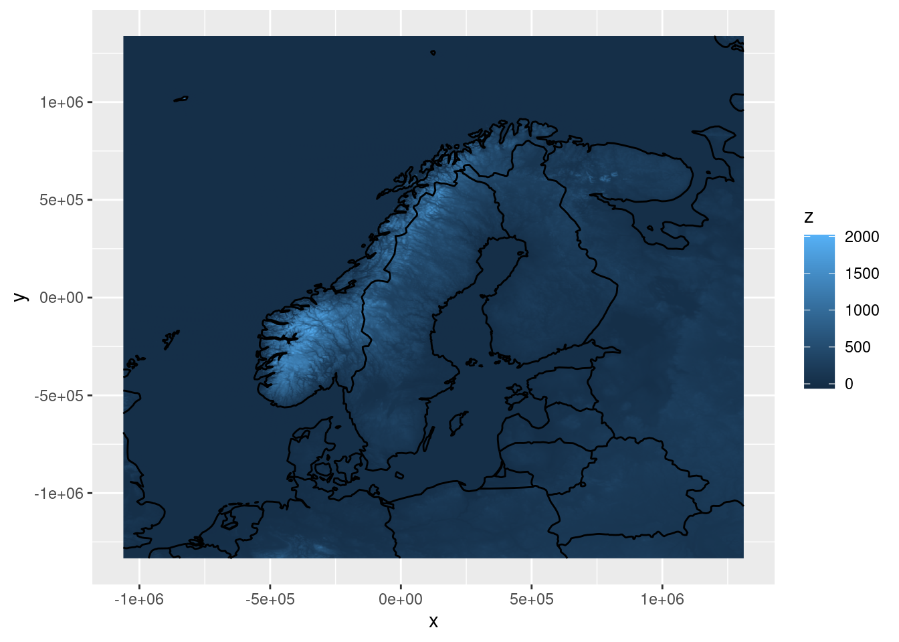
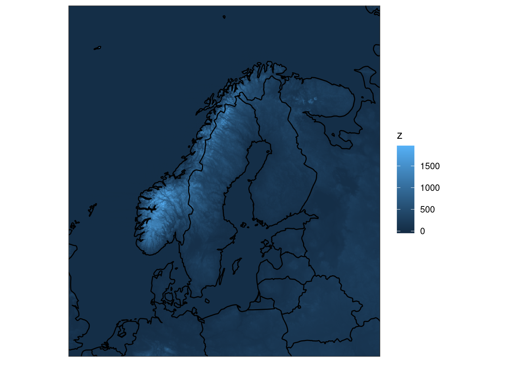
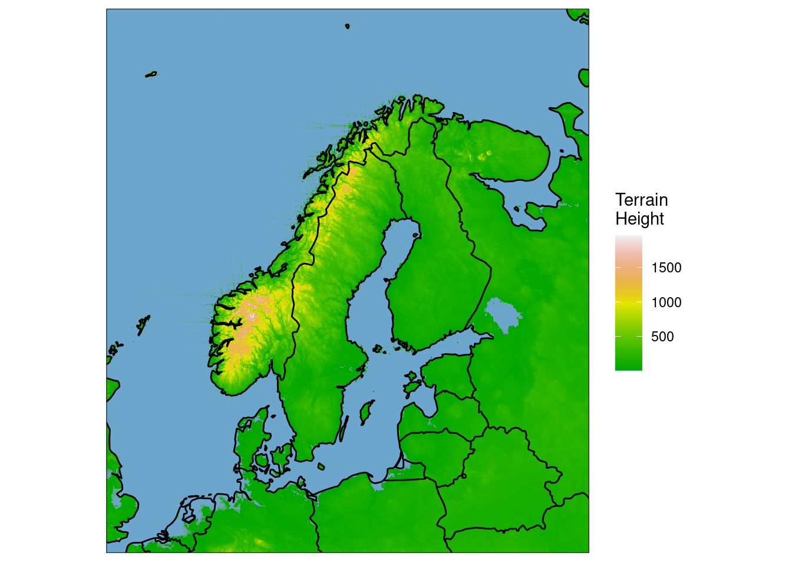
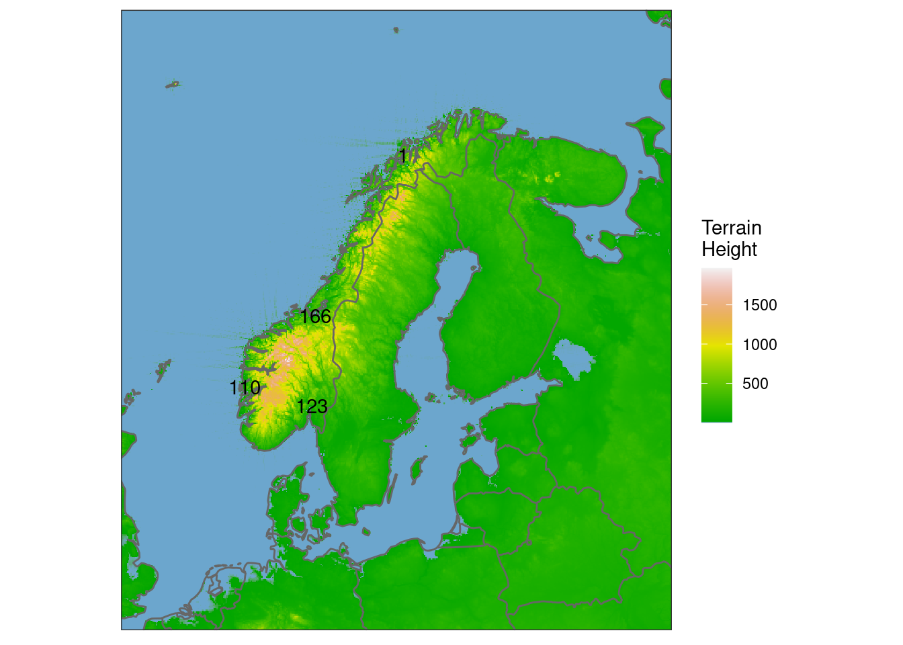
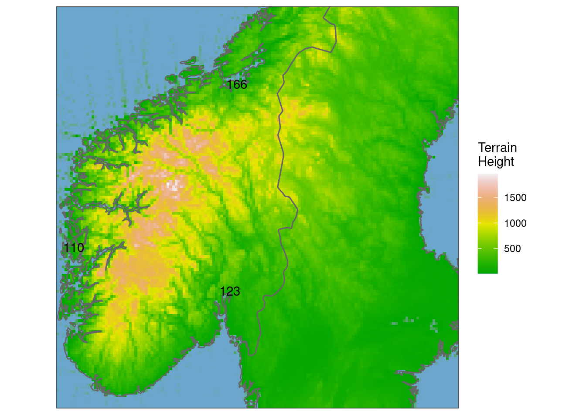
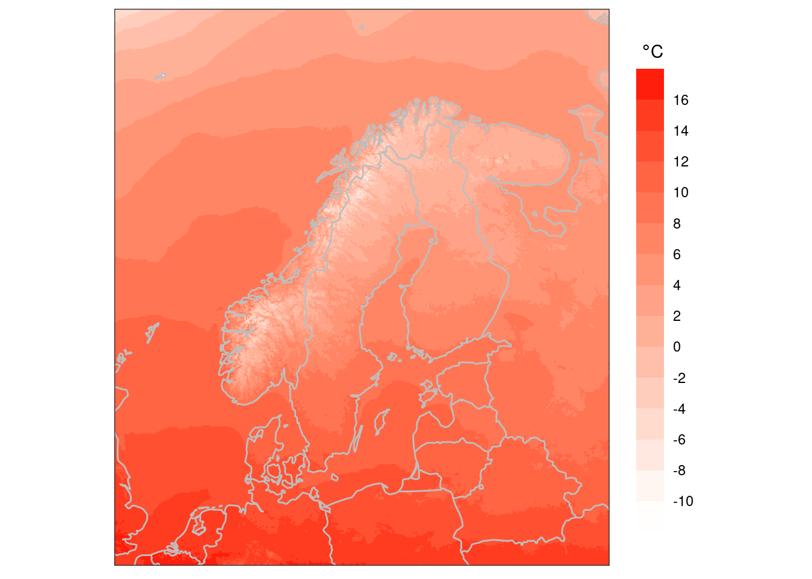
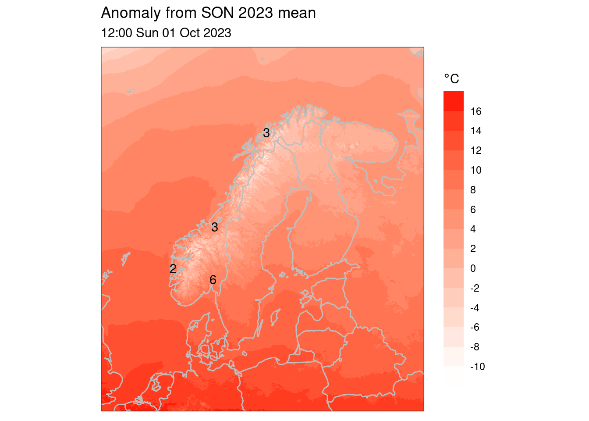

file_template = "meps_det",Maps with harp
In this tutorial, we will go through some basic methods to make maps in harp. It should be noted that harp version 0.2.2 is needed to follow all of the examples.
Data
The data being used in this tutorial are from the MEPS model, which is run as a collaboration between the meteorological institutes of Norway, Sweden, Finland and Estonia. The paths are set to get the data from internal disks at MET Norway. The data are also available on the MET Norway thredds server and can be read by replacing
in the calls to read_forecast() with
file_path = "https://thredds.met.no/thredds/dodsC/meps25epsarchive",
file_template = "{YYYY}/{MM}/{DD}/meps_det_2_5km_{YYYY}{MM}{DD}T{HH}Z.nc",
file_format = "netcdf",Attach the packages we’re going to need
library(harp)
library(dplyr)
library(meteogrid)Read the data
It’s important that the data are in a data frame for ggplot, so read_forecast() is the best option. To demonstrate getting the model elevation, surface geopotential (\(\Phi_{sfc}\)) will be read from the file.
\[ z_{sfc}=\frac{\Phi_{sfc}}{9.80665} \]
sfc_geo <- read_forecast(
2024013100,
"meps",
"sfc_geo",
lead_time = 0,
file_template = "meps_det",
return_data = TRUE
)We can now scale the surface geopotential to height in metres:
sfc_geo <- scale_param(sfc_geo, 1 / 9.80665, new_units = "m", mult = TRUE)Get the map outline
We can get a map outline by getting the domain from the forecast column in the data. By setting polygon = FALSE, the map is returned as paths rather than polygons since paths are slightly easier to plot.
countries <- get_map(get_domain(sfc_geo$fcst), polygon = FALSE)By default, the map outline is from the “world” database in the maps package. Higher resolution maps are available via the rnaturalearthdata and rnaturalearthhires packages.
countries_hires <- get_map(
get_domain(sfc_geo$fcst),
map = rnaturalearthhires::countries10,
polygon = FALSE
)Plot using ggplot
The geom_georaster() geom, that is a harp extension to ggplot can be used to plot the 2d field.
ggplot() +
geom_georaster(aes(geofield = fcst), sfc_geo) +
geom_path(aes(x, y), countries)
By default the axes are stretched to fill the plot window and a margin is added. We can fix this with coord_equal(expand = FALSE), and remove the superfluous axis labels with theme_harp_map(). In addition, to speed up plotting the data can be upscaled using the downsample method, whereby pixels are dropped prior to plotting - this is useful for testing, but it may be better not to use it for the final plot.
ggplot() +
geom_georaster(
aes(geofield = fcst),
sfc_geo,
upscale_factor = 2,
upscale_method = "downsample"
) +
geom_path(aes(x, y), countries) +
coord_equal(expand = FALSE) +
theme_harp_map()
We can also add a better colour scale using scale_fill_gradientn(). Note that the limits argument sets the limits of the colour scale - this is just to make the plot look nicer - a specific landmask should probably be used really. The oob argument tells it what to do with data that are outside the limits.
ggplot() +
geom_georaster(
aes(geofield = fcst),
sfc_geo,
upscale_factor = 2,
upscale_method = "downsample"
) +
geom_path(aes(x, y), countries) +
scale_fill_gradientn(
"Terrain\nHeight",
colours = c("skyblue3", terrain.colors(255)),
limits = c(1, NA),
oob = scales::squish
) +
coord_equal(expand = FALSE) +
theme_harp_map()
Get model elevation interpolated to stations
Now, let’s say we want to add some text to the plot, e.g. for terrain height in Oslo, Bergen, Trondheim and Tromsø. We can get the interpolated terrain height by reading the data and interpolating it. We’ll start by filtering the built in station list.
my_stations <- filter(
station_list,
name %in% c("OSLO-BLINDERN", "BERGEN/FLORIDA", "TRONDHEIM/VOLL", "TROMSO")
)We can now use these stations in the interpolate options for read_forecast()
stn_hgts <- read_forecast(
2024013100,
"meps",
"sfc_geo",
lead_time = 0,
file_template = "meps_det",
transformation = "interpolate",
transformation_opts = interpolate_opts(my_stations),
return_data = TRUE
) |>
scale_param(1 / 9.80665, "m", TRUE) |>
mutate(parameter = "height")The data are in lat-lon coordinates so we need to project them into the coordinate system of the maps.
stn_hgts <- geo_reproject(stn_hgts, sfc_geo$fcst)We can plot these values (rounded so they don’t take loads of space) on the map using geom_text()
ggplot() +
geom_georaster(
aes(geofield = fcst),
sfc_geo,
upscale_factor = 2,
upscale_method = "downsample"
) +
geom_path(aes(x, y), countries, colour = "grey40") +
geom_text(aes(x, y, label = round(fcst)), stn_hgts) +
scale_fill_gradientn(
"Terrain\nHeight",
colours = c("skyblue3", terrain.colors(255)),
limits = c(1, NA),
oob = scales::squish
) +
coord_equal(expand = FALSE) +
theme_harp_map()
Plotting a subset
The easiest way to plot a subset of the data is to set the limits in coord_equal(). These values are in the projected coordinate system so we need these values. We can use information from the extent of the domain to get the x and y values for each axis.
dom_info <- DomainExtent(get_domain(sfc_geo$fcst))
x <- seq(dom_info$x0, dom_info$x1, dom_info$dx)
y <- seq(dom_info$y0, dom_info$y1, dom_info$dy)We’ll also use the higher resolution map outline as we’re zoomed in.
ggplot() +
geom_georaster(
aes(geofield = fcst),
sfc_geo,
upscale_factor = 2,
upscale_method = "downsample"
) +
geom_path(aes(x, y), countries_hires, colour = "grey40") +
geom_text(aes(x, y, label = round(fcst)), stn_hgts) +
scale_fill_gradientn(
"Terrain\nHeight",
colours = c("skyblue3", terrain.colors(255)),
limits = c(1, NA),
oob = scales::squish
) +
coord_equal(
expand = FALSE, xlim = c(x[200], x[500]), ylim = c(y[300], y[600])) +
theme_harp_map()
3-month means
Reading in 3 months of data, with one field per day results in about 740MB for MEPS data.
t2m <- read_forecast(
seq_dttm(2023090100, 2023113000, "1d"),
"meps",
"T2m",
lead_time = 12,
file_template = "meps_det",
return_data = TRUE
) |>
scale_param(-273.15, "degC")We can easily get the mean and add it as a column - each row will have the same value.
t2m <- mutate(t2m, fcst_mean = mean(fcst))And we can also add an anomaly from the mean column
t2m <- mutate(t2m, fcst_anom = fcst - fcst_mean)We can make a plot as before using ggplot and geom_georaster(). Just to demonstrate how it’s done we’ll use a binned colour scale to plot the mean (note we only want the first row in the data frame).
ggplot() +
geom_georaster(
aes(geofield = fcst_mean),
t2m[1,],
upscale_factor = 2,
upscale_method = "downsample"
) +
geom_path(aes(x, y), countries, colour = "grey") +
scale_fill_binned(
bquote(~degree*"C"),
low = "white", high = "red",
breaks = seq(-12, 20, 2)
) +
coord_equal(expand = FALSE) +
theme_harp_map() +
theme(legend.key.height = unit(4, "lines"))
We can use geo_points() to interpolate some of the data to our small list of stations.
t2m_stns <- geo_points(t2m, points = my_stations)And we need to reproject
t2m_stns <- geo_reproject(t2m_stns, t2m$fcst)And now we can plot the anomaly at our locations on any given day
ggplot() +
geom_georaster(
aes(geofield = fcst_mean),
t2m[1,],
upscale_factor = 2,
upscale_method = "downsample"
) +
geom_path(aes(x, y), countries, colour = "grey") +
geom_text(
aes(x, y, label = round(fcst_anom)),
filter(t2m_stns, fcst_dttm == as_dttm(2023100100))
) +
scale_fill_binned(
bquote(degree*"C"),
low = "white", high = "red",
breaks = seq(-12, 20, 2)
) +
labs(
title = "Anomaly from SON 2023 mean",
subtitle = format(
as_dttm(2023100112), "%H:%M %a %d %b %Y"
)
) +
coord_equal(expand = FALSE) +
theme_harp_map() +
theme(legend.key.height = unit(3.5, "lines"))